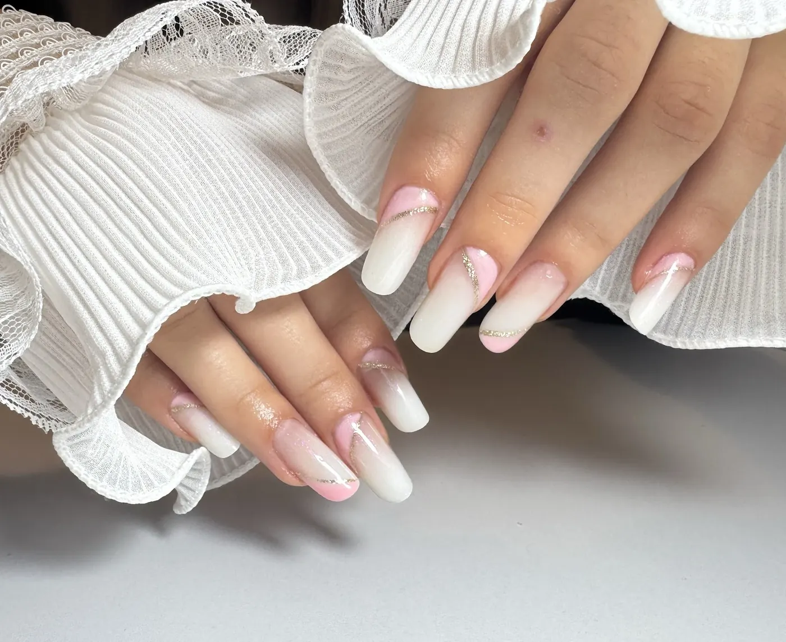

{{Construcție|Build|Construção}}
{{Unghii cu gel|Gel nails|Unhas de gel}}
{{Unghia e construită cu gel, întărit strat cu strat sub lampă, și pilită la forma aleasă.|The nail is built with gel, cured layer by layer under the lamp and filed to your chosen shape.|A unha é construída em gel, curado camada a camada sob a lâmpada e limada no formato escolhido.}}
- {{Forme: pătrată, migdală, ovală, balerină|Shapes: square, almond, oval, ballerina|Formatos: quadrada, amêndoa, oval, bailarina}}
- {{Lungimi: scurte, medii, lungi|Lengths: short, medium, long|Comprimentos: curtas, médias, compridas}}
{{preț și durată: de confirmat|price and time: to be confirmed|preço e duração: a confirmar}}{{Programează →|Book →|Marcar →}}